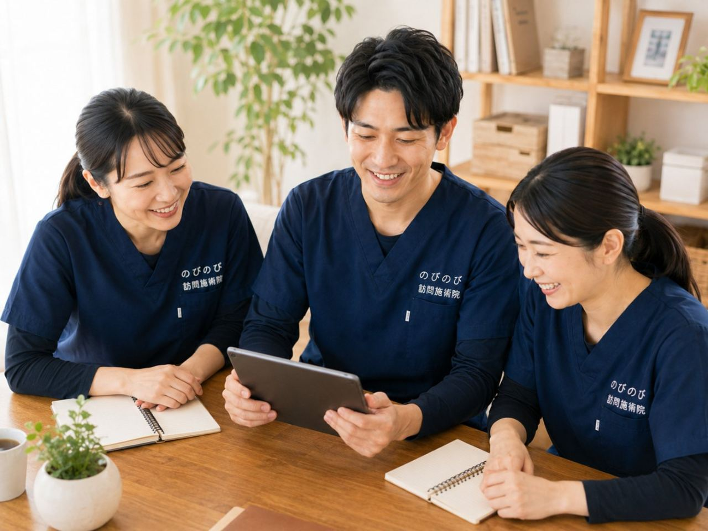

夕方になると足がぱんぱんに張る、靴下のゴム跡がくっきり残って消えない、ふくらはぎが重くて動くのがおっくう。ご高齢の方の足のむくみは、ご家族からの相談がとても多いお悩みです。年齢とともに動く機会が減り、血液やリンパのめぐりが滞ると、足に水分がたまりやすくなります。ここでは、むくみが起こるしくみと、自己判断せずまず医療機関へつなぐべきサインを整理したうえで、訪問での鍼灸・マッサージにできることをお伝えします。
まず大事なところから。足のむくみは、原因の見極めが第一です。片脚だけ急に腫れて痛む・熱をもつ、急な全身のむくみや息切れ、数日での体重増加といったときは、病気のサインのことがあり、まず医療機関を受診してください。原因が落ち着いた慢性的なむくみやだるさに対しては、鍼灸・マッサージが血のめぐりを促し、筋肉のこわばりを和らげる補助になります。利尿や病気の治療ではなく、あらわれ方には個人差があります。自己負担は1割で1回およそ395円、介護保険の限度額とは別枠でご利用いただけます。
なぜ高齢になると足がむくみやすいのか
足のむくみは、血液やリンパの流れが滞り、余分な水分が足にたまることで起こります。ふくらはぎの筋肉は、伸び縮みしながら血液を心臓へ押し戻すポンプの役目を担っています。ところが歩く機会が減ると、このポンプが働きにくくなります。長く座ったり横になったりで同じ姿勢が続くこと、体の冷えが重なると、水分は下へ下へとたまっていきます。
むくんだ足は重だるく、いっそう動くのが億劫になります。動かないからまたむくむ、という行きつ戻りつが続きやすいのも、高齢の方に多い特徴です。運動量の低下、めぐりの滞り、冷え。こうした要素がからみ合っているので、どこか一点だけでなく、全体をゆるやかにほぐしていく視点が足を軽くする手がかりになります。爪が厚くなって切りにくい、巻き爪が痛むといったお悩みは、巻き爪・肥厚した爪など足のトラブルにもご覧ください。
むくみに気づいたときのサイン、こんな出方をしていませんか
めぐりの滞りからくるむくみは、夕方に強くなり、朝には少し落ち着いていることが多いものです。靴下のゴム跡が残る、ふくらはぎを指で押すと少しへこむ、足が重くてだるい、あわせて冷えを感じる。こうした出方であれば、生活のなかで少しずつ整えていける範囲のことがたびたびあります。
一方で、いつもと様子が違うむくみもあります。左右で腫れ方が大きく違う、急にむくみが強くなった、押した跡がなかなか戻らない、皮膚が変色していたり傷があったりする。次の章でくわしく触れますが、こうしたときは自己判断で様子を見ず、医療機関へつなぐ場面です。毎日そばにいるご家族だからこそ、この違いに気づけます。
まず受診してほしい、見逃したくないサイン
むくみのなかには、体の病気が背景にひそむものがあります。次のようなときは、鍼灸・マッサージで様子を見るより先に、必ず医療機関を受診してください。片脚だけが急に腫れて痛む、熱をもっている。これは血のかたまり（血栓）ができている疑いがあり、急を要します。急に顔や全身までむくむ、息切れや動悸をともなう、数日で体重が増えた。心臓や腎臓の病気が隠れていることがあります。
ほかにも、指で押した跡が長く残る、尿の量が減った、皮膚が変色している・傷があるといったときも、まず医師の診察が必要です。むくみは、体の内側からの知らせのことがあります。原因の見極めは医師が主であり、私たちも、伺ったときにこうしたサインをうかがえば、施術より先に受診をおすすめします。急ぐべきものと、じっくり整えていくものの見分けを、いちばん大切にしています。
受診で大きな心配がないと分かってから
医療機関で重い病気が背景にないことを確かめたうえで、動かない生活やめぐりの滞りからくる慢性的なむくみについては、鍼灸・マッサージがケアの支えになることがあります。順番が逆にならないこと。ここが安全にケアを続けるための土台になります。
主治医がいらっしゃる方は、むくみのことをひとこと相談し、体を動かしても差し支えないかを確認しておくと、より安心して続けられます。かかりつけがない場合も、気になる症状があるうちは受診を優先してください。医療と歩調を合わせながら、落ち着いたむくみやだるさに向き合っていきます。
重だるい足に、鍼やお灸・手技でできること
鍼やお灸には、血のめぐりを促し、体を温め、こわばった筋肉を和らげる働きが期待できます。ふくらはぎなど足のめぐりに深く関わる筋肉をゆるめて温めると、重だるさが引く感じがする、という方がいらっしゃいます。冷えの強い方には、お灸で足元をじんわり温めるケアも組み合わせます。あくまで補助であり、利尿や病気の治療ではありません。あらわれ方には個人差があります。
あわせて、足首を回したり足の指を動かしたりする機能訓練で、ポンプ役のふくらはぎが働きやすい状態を保ちます。こうした手技や機能訓練は、鍼灸に組み合わせるケアとして行います。これらについて別途の料金はいただきません。目指すのは、その場かぎりで軽くすることではなく、めぐりのよい、むくみをためこみにくい足を日々保っていくことです。
外に出るのがつらい足だから、家で受ける
足がむくんで重だるいと、外出そのものが重荷になります。歩くのがつらい、靴に足が入りにくい、立って順番を待つのがしんどい。むくんだ足で治療に通うこと自体が負担になりがちです。だから、暮らし慣れた家で受けられる訪問には意味があります。移動の心配なく、その方のペースで続けられます。
施術は国家資格をもつはり師・きゅう師が伺います。別途の出張費（出張料・交通費）はかからず、エリア内はどこでも同額です。落ち着いた環境で足元をゆっくり温め、動かし、めぐりを促す。通院がむずかしい方ほど、自宅で受けられる利点を感じていただけます。
自宅でできる、足のための穏やかな工夫
施術と歩調を合わせて、日々のちょっとした心がけもむくみ対策になります。横になるときはクッションなどで足を心臓より少し高くする、テレビを見ながらでも足首をこまめに動かす、足元を冷やさない、靴下やゴムで足首を締め付けすぎない。塩分のとりすぎに気をつけることも助けになります。
どれも特別なことではありませんが、無理なく続けられるかどうかが分かれ目です。訪問のたびに、その方の体に合った足の動かし方や過ごし方をお伝えしますので、ご家族もいっしょに取り組みやすくなります。ただし、むくみが急に強くなったときは、続けるより受診を優先してください。
気になる費用のこと
施術は医療保険で計算します。1回の施術は総額3,950円で、自己負担は1割の方でおよそ395円です。ひと月の目安（1割）は、週1回でおよそ1,580円、週2回でおよそ3,160円、週3回でおよそ4,740円。2割はちょうど倍になります。これは値引きではなく、公的な医療保険にもとづく正規の料金です。
この費用は医療保険で計算するため、介護保険の区分支給限度額とは別の枠でお使いいただけます。保険の利用には医師の同意書が必要で、手続きはのびのびが引き受けます。要介護認定がない方でも、医師の同意があれば受けられます。お支払いは月ごとにまとめてお願いしています。内訳はあとからでも確認できます。
対応エリアと、はじめの相談
のびのび訪問施術院がお伺いするのは、大阪府では豊中市・吹田市・茨木市・高槻市・箕面市・摂津市・池田市、大阪市では淀川区・東淀川区・都島区・北区・旭区、兵庫県では尼崎市・伊丹市です。このエリア内であれば、出張費はかからず同額でお受けいただけます。
ご本人だけでなく、ご家族やケアマネジャーからのご相談も承ります。むくみのことだけでも構いません。病気が背景にないかの見極めが先という前提のうえで、落ち着いたむくみやだるさに何ができるかを、体の状態をうかがいながら一緒に整理していきます。どう進めるか迷うときは、お住まいの地域包括支援センターなど行政の相談窓口も頼りになります。
よくある質問
高齢の家族の足のむくみでも受けられますか？
むくみにともなう慢性的なだるさや重さ、冷えについて医師が必要と認め、通院がむずかしい場合は対象になることがあります。まずは病気が背景にないかの見極めが先です。片脚だけ急に強く腫れるようなときは、施術より先に受診してください。
むくみは鍼灸やマッサージで軽くなりますか？
ふくらはぎなどの筋肉を動かして温め、めぐりを促すことで、重だるさがやわらぐ方がいらっしゃいます。ただし利尿や病気の治療ではなく、あくまでめぐりを助ける補助です。あらわれ方には個人差があります。
どんなむくみだと、まず病院へ行くべきですか？
片脚だけ急に腫れて痛む・熱をもつ、急な全身のむくみや息切れ、数日での体重増加、押した跡が長く残る、皮膚の変色や傷があるといったときです。心臓や腎臓、血管の病気が隠れていることがあり、自己判断せずまず医療機関を受診してください。
強く揉んでもらえば、むくみは早く取れますか？
強く揉めばよいというものではありません。ご高齢の方や皮膚の弱い方には、強い刺激がかえって負担になり、あざや痛みの原因になることもあります。その方が心地よいと感じる範囲でめぐりを促します。まずは相談だけの段階でも構いません。
家でできるケアはありますか？
足を心臓より少し高くして休む、負担にならない程度に足首を動かす、足元を冷やさない、足首を締め付けすぎない、といった穏やかな工夫をお伝えします。伺った際に、その方に合う方法を確認します。急にむくみが強まったときは受診を優先してください。
要介護認定を受けていなくても利用できますか？
受けられます。この施術は医療保険で計算するため、要介護認定の有無は問いません。医師の同意書があれば利用でき、介護保険の区分支給限度額とも別の枠です。同意書の手続きはのびのびが段取りします。
費用はどれくらいかかりますか？
1回の施術は総額3,950円で、自己負担は1割の方でおよそ395円です。ひと月の目安（1割）は週1回でおよそ1,580円。別途の出張費はかからず、エリア内は同額です。お支払いは月ごとにまとめてで、施術内容がわかる明細をお渡しします。
むくみのことだけでも相談していいですか？
もちろんです。ただ、むくみの奥に病気がないかを確かめることが先決なので、気になる場合はまず主治医にも相談しながら進めます。そのうえで、落ち着いたむくみに対してめぐりを整え、冷えやこわばりを和らげるケアを行います。

足のだるさ・むくみ（下肢静脈瘤）でお悩みの方へ｜訪問鍼灸マッサージ
続きを読む
便秘やお腹の張りが続く高齢のご家族へ｜訪問鍼灸という選択肢と受診の目安
続きを読む
はり・きゅう・マッサージの違いと使い分け｜訪問で何を受けられる？
続きを読む
リンパ浮腫・腕や脚のむくみ｜医療的ケアを土台に、こわばりに寄り添う在宅の鍼灸
続きを読む
心不全のむくみ・息切れ・だるさと在宅ケア｜自宅で受ける訪問鍼灸マッサージ
続きを読む